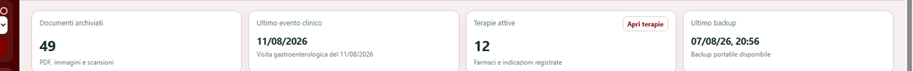

Documenti sanitari
Importazione di PDF e immagini, organizzazione, consultazione e conservazione dell'originale.
Clinica Digitale - Dossier Sanitario aiuta a raccogliere, organizzare e consultare documenti, terapie, diagnosi, appuntamenti e informazioni sanitarie personali e familiari, mantenendo il controllo dei dati nelle mani dell'utente.
Il Dossier mette in relazione ciò che normalmente resta disperso tra cartelle, PDF, fotografie, promemoria e strumenti diversi.
Importazione di PDF e immagini, organizzazione, consultazione e conservazione dell'originale.
Quadro clinico più leggibile, terapie attive e informazioni utili raccolte in modo coerente.
Visite, controlli, rinnovi, scadenze e promemoria multipli, disponibili anche senza servizi esterni.
Profili distinti e gestione pensata sia per il singolo sia per nuclei familiari e persone assistite.
Andamento dei principali parametri e accesso ai documenti da cui provengono i valori.
Funzionamento locale come base, con possibilità di backup e sincronizzazione facoltativi.
Clinica Digitale nasce per chi vuole maggiore ordine, chiarezza e continuità nella gestione delle proprie informazioni sanitarie e di quelle delle persone care.
Dati sintetici, ultime attività e stato generale del Dossier convivono in una vista organizzata.
Le schermate pubblicate sul sito sono dimostrative e anonimizzate.

Clinica Digitale è progettata perché anche una persona non tecnica possa usare il proprio Dossier senza dover conoscere infrastrutture, protocolli o configurazioni complesse.
La versione 1.0.0 per PC Windows è disponibile ora. Le versioni macOS, iOS e Android sono previste successivamente.